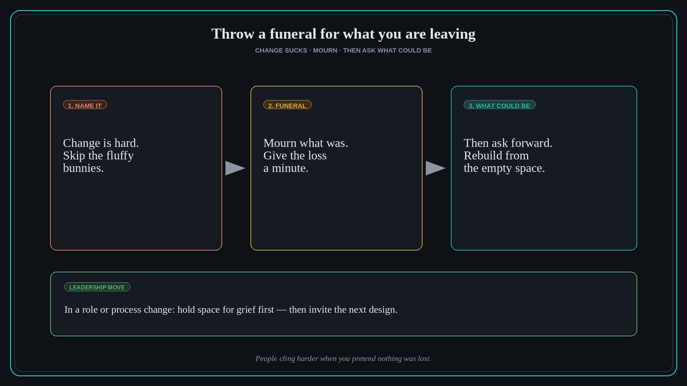

Throw a funeral for what you are leaving, then ask what could be
Source: Molly Graham (@molly_g) via Lenny Rachitsky (@lennysan)
original post · podcast
What it claims
Change can be good and still suck. Leaders do not need fluffy optimism to move a team through it. Sometimes you need a funeral: name the loss, mourn what was for a minute, then ask what could be. Skipping grief makes people cling harder to the old job, process, or identity.
Why it matters for a PO
Roadmap pivots, AI role shifts, and process changes fail when you only sell the upside. Stakeholders and teams need a clean goodbye to the old way before they can adopt the new one. A short, honest mourning ritual is a stakeholder move, not softness.
3 takeaways
- Say “this is hard” out loud — credibility beats cheerleading.
- Give loss a container (funeral / retrospective of what we leave) before the redesign workshop.
- Only after mourning, ask “what could be?” so energy goes forward, not into resistance.
Practice this week
For one change you are driving, open with two minutes: what we are leaving behind and why it mattered. Then move to the next design. Notice whether dissent softens.